为什么需要压缩模型#
由于云端计算带来的延迟和隐私问题，有时我们需要把模型部署到运算资源有限的设备上（如手表、无人机、单片机等），那么此时需要对模型进行压缩，让模型用比较少的空间而保留原本的相似的性能。
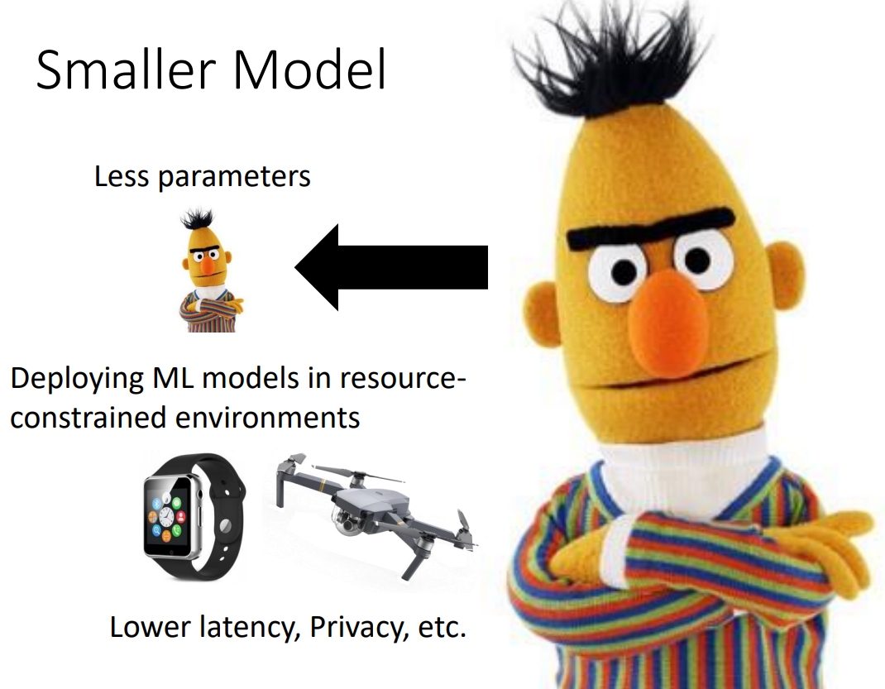Network Pruning#
Network Pruning的基本思想#
Network Pruning的方法是指删除掉模型的一些无关紧要的参数，然后再微调模型得到更小但效果接近的模型。每一次Pruning需要评估模型的各个参数的重要性（可以用绝对值，也可以用LLL中的方法衡量），然后移除不重要的参数，再进行微调。这个过程可以重复多次以获得足够小的模型。
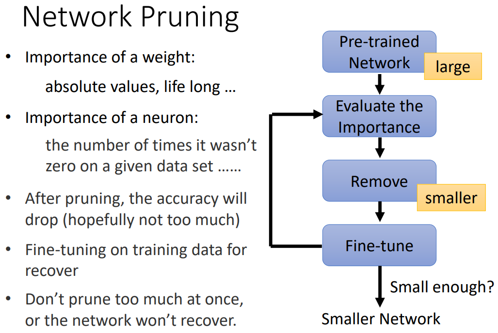Weight Pruning#
Weight Pruning是指删除掉模型部分神经元上的一些权重，实现参数的减少，但是这种方法会让模型变成不规则的模型。这不仅难以实现，修剪后的模型还难以用GPU加速运算。
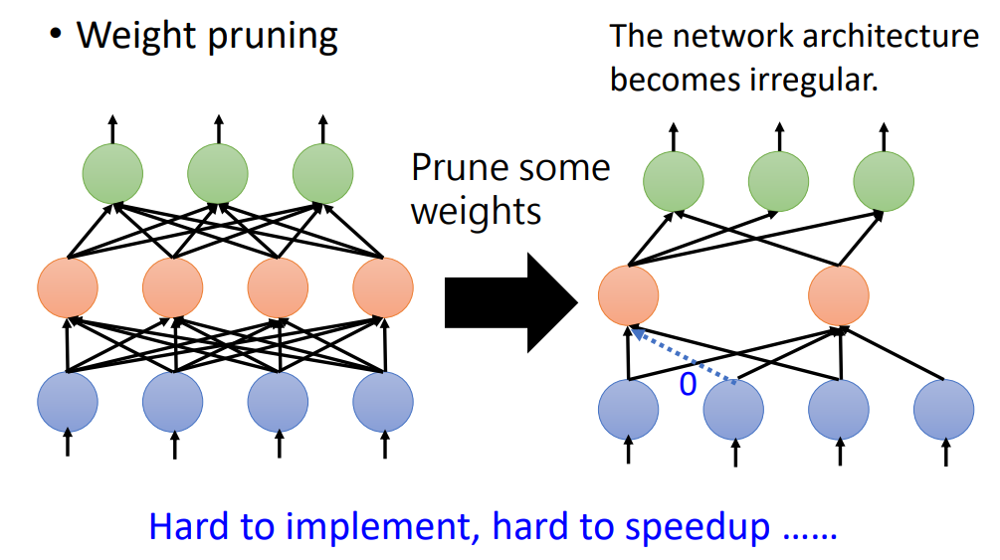Neuron Pruning#
Neuron Pruning的方法则是直接删除部分神经元，使得修建后的神经网络依然是规则的，这样比较容易实现，修剪的网络也便于用GPU加速。

Why Pruning？#
对于Pruning有效性的一种解释是“大乐透假说”（Lottery Ticket Hypothesis）。这个假说认为可以把一个大的模型看成很多小模型的组合，如果有某一个小模型的参数的初始化是良好的，那么相当于“中奖”，此时大的模型也能很好地优化。
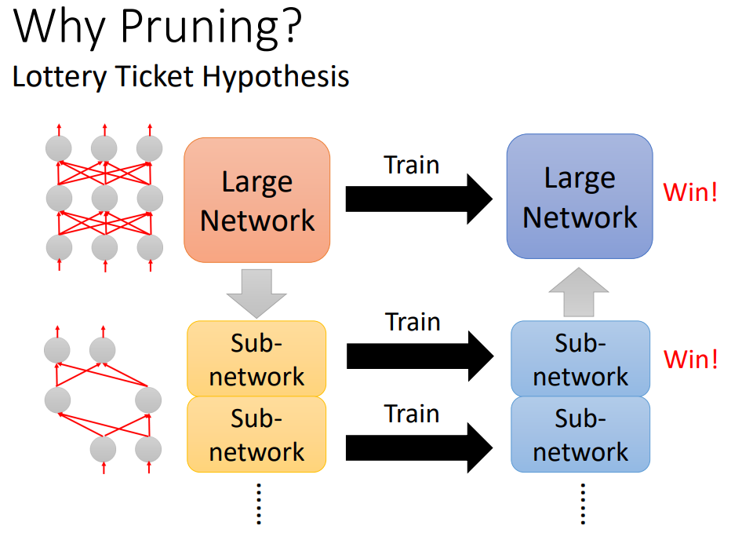这个假说有一些实验进行验证：先把一个大的模型随机初始化，然后进行训练，将Pruning后的模型拿出，分别对其进行随机初始化和与初始化大模型时相同的初始化。发现随机初始化的小模型难以训练，但是用和大模型初始化相同的初始化则可以使得小模型很好地被优化。
所以可以认为Pruning实际上是挑选出了“中奖”的小模型。
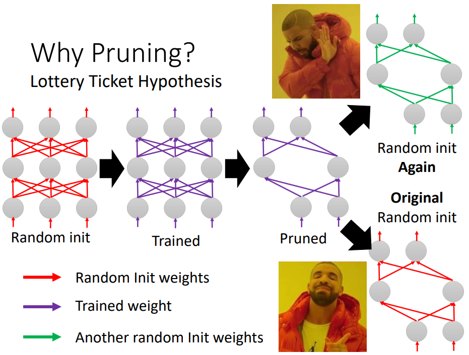https://arxiv.org/abs/1810.05270中却报道了和大乐透假说相反的现象，下表中Scratch-E对应的一列是指把Pruning后的模型随机初始化的训练结果，而Scratch-B是在Scratch-E的基础上多训练几轮的结果，然后发现Scratch-B的结果可以优于Pruning后再微调的结果。
所以这篇文章认为大乐透假说可能只在部分条件下成立，比如learning rate比较小，或是模型通过weight pruning得到。
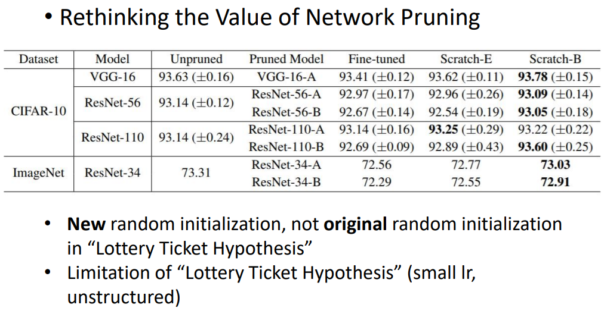Knowledge Distillation#
Knowledge Distillation，即知识蒸馏，这种方法是先训练一个比较大的teacher net，然后训练规模比较小的student net的产生和teacher net相近的输出。想法是直接让比较小的模型学习one hot vector的标准答案可能过于困难，所以只要求其输出接近teacher net，或许训练难度会比较低。
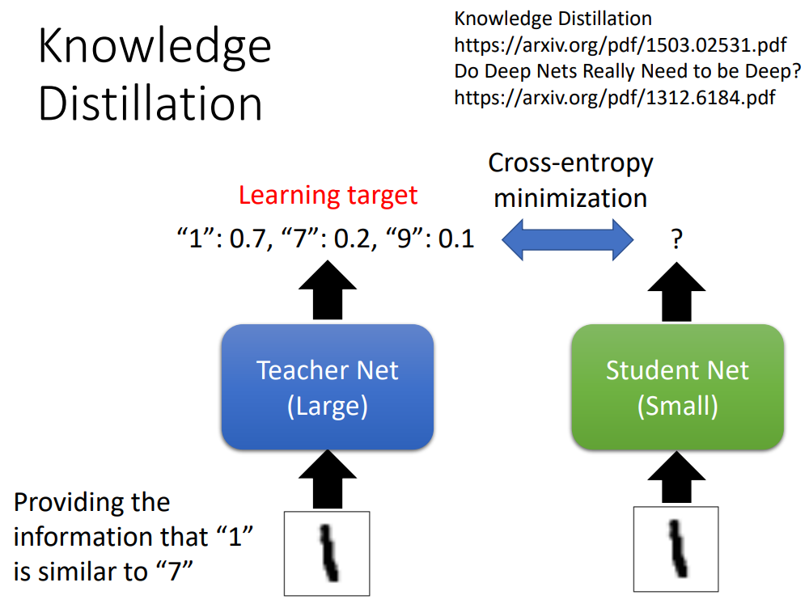此外，为了进一步降低训练难度，有时还会将teacher net的softmax层输出中的
Parameter Quantization#
Parameter Quantization的想法是用比较少的位数来存储一个值。
第一种方法是Weight clustering，这个方法的想法是将模型中的weight进行聚类，将weight比较接近的部分归为一类，然后给每一类赋值（可以为这一类里所有weight的平均值）。然后可以用分类图+类与值的对应表的方式来储存模型中的所有参数。此外，还可以用Huffman Encoding或其他方法进一步减少存储参数所需空间。
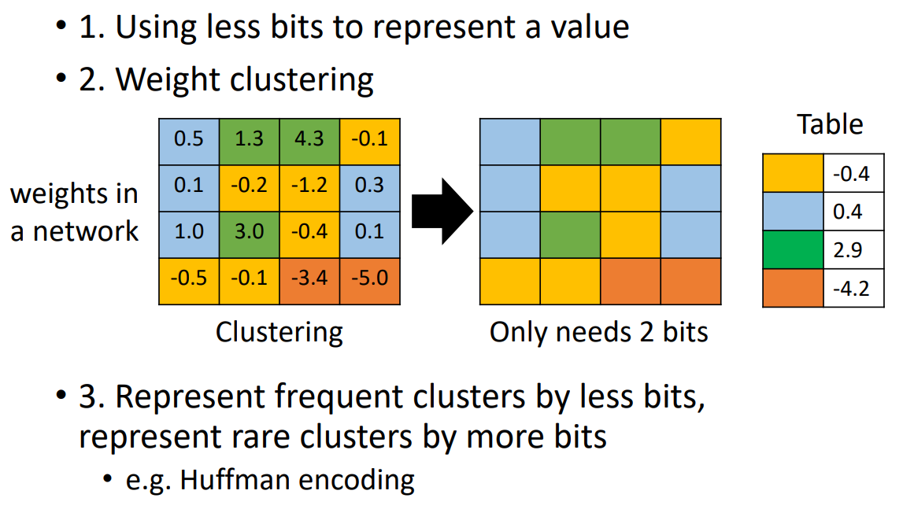第二种方法是将参数的位数减小，比如将64位浮点数改为8位，甚至整数，甚至只有1和-1两个值！
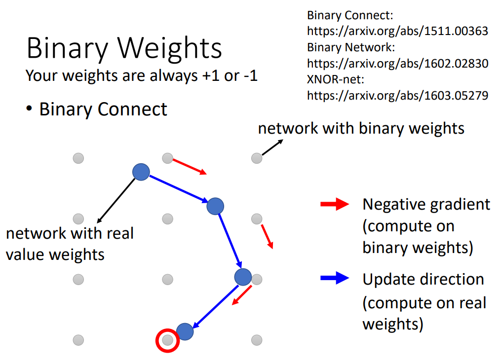Architecture Design#
Architecture Design是通过设计神经网络的结构来减少模型参数的。
以一般的CNN为例，如果输入、输出的feature map的channel数分别为2、4，卷积核大小为3x3，那么这个卷积层参数数为72。
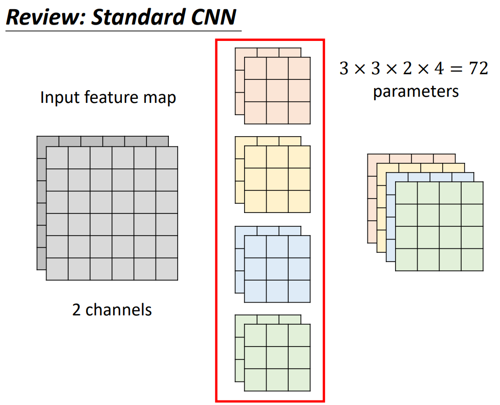但是如果我们将这个卷积层改为卷积核大小为3x3的Depth wise Convolution（channel数和输入feature map的channel数相同，每一个filter产生输出中的一个channel，这种卷积方式忽略了不同channel之间的关系），再让输出的feature map经过输出channel数为4的Pointwise Convolution（卷积核大小为1x1），最后输出的feature map大小是相同的，但是两个卷积层的参数和只有26。
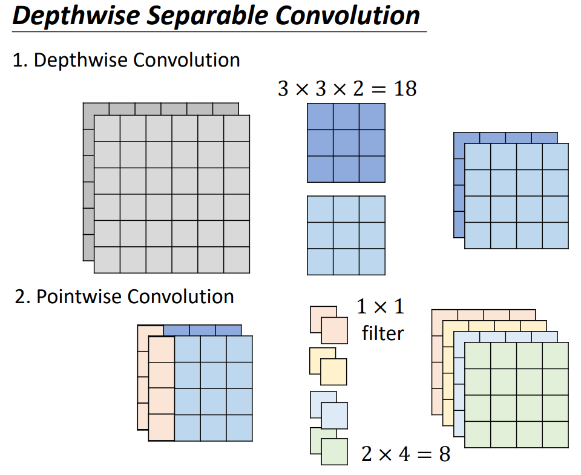对于输入、输出channel数为
这种方法的思想类似于矩阵分解，即下图中的
Dynamic Computation#
我们还可以让模型根据实际情况动态地调整所用的模型的规模，就像可以有的手机可以通过电量自动调整屏幕亮度。
比如我们可以让模型动态地调整模型地深度，以图像识别为例，这种方法在多个卷积层后都接入输出层，我们可以通过硬件的具体情况（如电量）调整所用的特征提取部分的深度。训练时我们只需要将所有输出层的loss相加得到
类似地，我们也可以调整使用的神经网络的宽度。同样地，训练时我们只需要将所有宽度的模型（并不是训练多个模型，只是有的模型只用完整模型的部分宽度）得到的loss相加得到
更进一步，我们甚至让模型根据输入的复杂程度来改变模型的深度。比如比较容易分类的图片，我们可以只用模型中的一小部分，对于复杂的图片，则用模型中比较多的layer甚至全部layer。
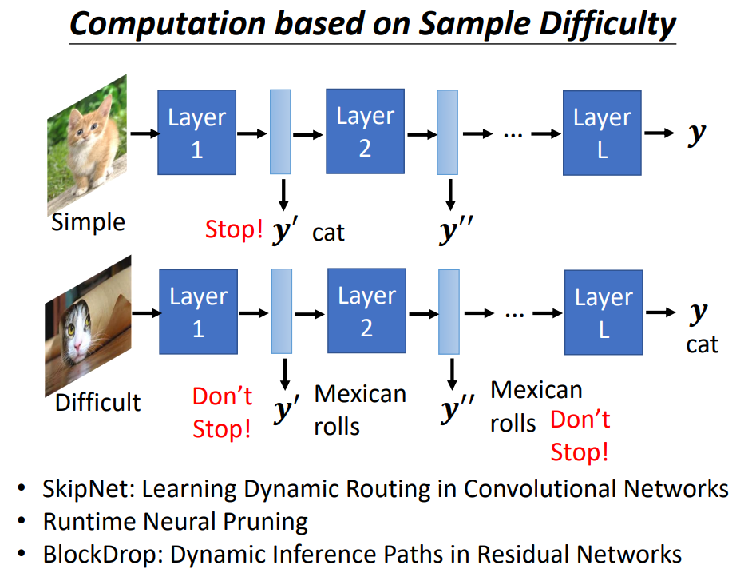作者: 核子